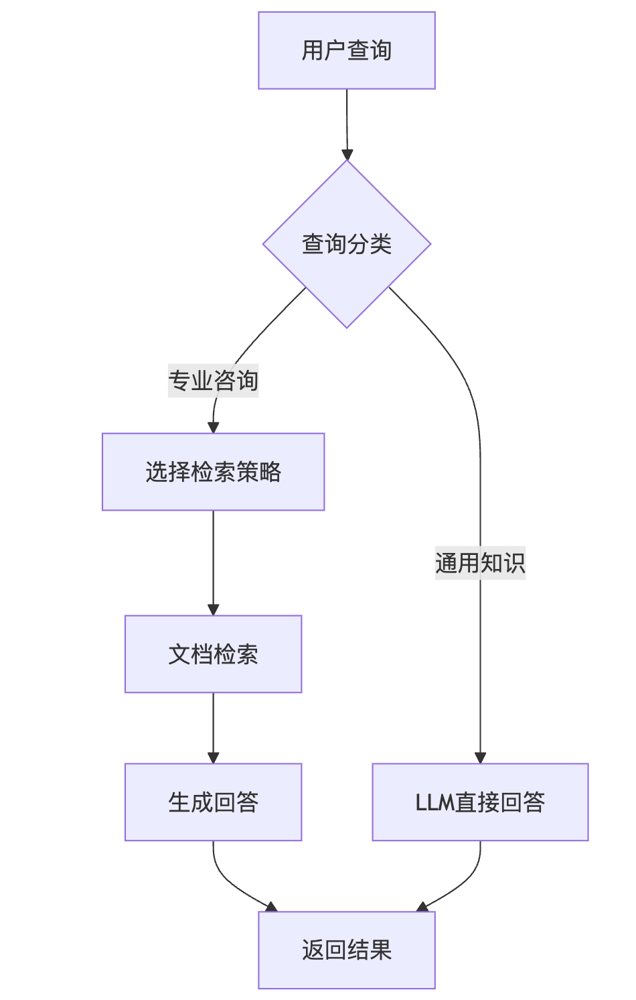

🧭
工程实践提示：示例中的模型地址、数据库账号和密钥均应通过环境变量或独立配置文件注入；部署前还需补充权限控制、输入校验、超时重试、日志脱敏、来源引用与离线评估。
学习目标
- 1.理解RAG系统的基本原理及其在教育领域的应用场景。
- 2.掌握EduRAG系统的模块化设计和各模块的核心功能。
- 3.熟悉RAG系统从查询到生成回答的完整工作流程。
1. RAG系统整体架构介绍
EduRAG智慧问答系统是一个基于**RAG（Retrieval-Augmented Generation，检索增强生成）**技术的智能问答平台，专为IT教育培训设计。它通过结合信息检索和生成式模型，从知识库中提取相关信息并生成准确、自然的回答。系统采用工程化的模块化设计，代码结构清晰，便于开发、维护和扩展。
1.1 系统背景
RAG技术通过检索外部知识库增强大语言模型的回答能力，特别适用于需要专业知识的场景。EduRAG的目标是为IT学习者提供高效、准确的答疑服务，支持多种文档格式和灵活的检索策略。
1.2 模块化架构
系统的代码组织分为以下几个核心模块：
base/：基础支持模块，负责配置、日志处理。core/：核心逻辑模块，实现RAG的关键功能。main.py：系统运行入口，支持数据处理和交互查询。
模块详情
- base模块：
config.py：管理系统配置，如API密钥、模型选择等。logger.py：记录系统运行日志，便于调试和监控。
- core模块：
document_processor.py：处理输入文档，分块并准备向量存储。prompts.py：管理Prompt模板，支持不同任务。query_classifier.py：分类用户查询类型。strategy_selector.py：选择合适的检索策略。vector_store.py：管理向量数据库，进行文档存储和检索。rag_system.py：整合RAG流程，生成最终回答。
- main.py：命令行交互入口，测试和运行系统。
1.3 代码目录结构
Text
integrated_qa_system/
├── config.ini # 配置文件，包含所有模块的配置
├── base/
│ ├── config.py # 配置管理，加载 config.ini
│ ├── logger.py # 日志设置
├── rag_qa/
│ ├── core/
│ │ ├── prompts.py # RAG 提示模板
│ │ ├── query_classifier.py # 查询分类器
│ │ ├── strategy_selector.py # 检索策略选择器
│ │ ├── vector_store.py # 向量存储与检索
│ │ ├── rag_system.py # RAG 系统核心逻辑
│ ├── main.py # RAG 系统独立入口，支持存储和查询
├── requirements.txt # 依赖文件
└── logs/
└── app.log # 日志文件
2. RAG系统基本工作流程
EduRAG系统的工作流程分为四个主要步骤，确保从用户查询到生成回答的高效性和准确性：
-
查询分类：
- 系统首先判断查询类型（如“通用知识”或“专业咨询”）。
- 通用知识直接由大语言模型回答，专业咨询进入检索流程。
-
策略选择：
- 根据查询特点选择检索策略：
- 直接检索：适用于明确查询。
- HyDE检索：适用于抽象问题，生成假设答案后检索。
- 子查询检索：分解复杂查询。
- 回溯检索：简化复杂问题后检索。
- 根据查询特点选择检索策略：
-
文档检索：
- 使用
vector_store.py从向量数据库中检索相关文档。 - 支持稠密向量和稀疏向量的混合检索，结果经过重排序优化。
- 使用
-
生成回答：
- 将检索到的文档作为上下文，结合用户查询输入大语言模型。
- 生成自然语言回答，若无答案则引导人工支持。
流程图

总结
EduRAG智慧问答系统通过工程化的模块化设计，实现了从查询分类到生成回答的完整流程。其核心优势包括：
- 模块化：代码分工明确，便于维护和扩展。
- 灵活性：支持多种检索策略，适应不同查询需求。
- 实用性：结合IT教育场景，提供专业回答。